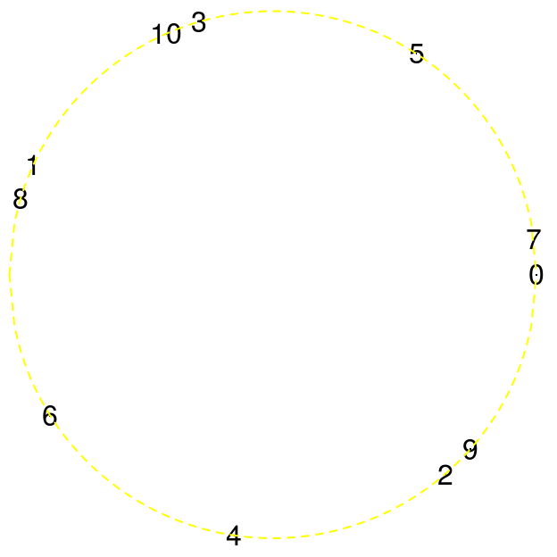

-
Le théorème des trois distances
2016-02-13
SourceLe théorème des trois distances, ou des trois longueurs, est à propos de la longueur des arcs qu’on obtient lorsqu’on place sur le cercle unité les points \(0\), \(\alpha\), \(2\alpha\), \(\ldots\), \(n\alpha\), où \(\alpha\) est un nombre irrationnel.
Rappels sur les fractions continues
Développement fini - nombre rationnel
Soient \(a_0\geq 0\), \(a_1 \geq 1\), \(\ldots\), \(a_N \geq 1\) des nombres entiers. On définit le nombre rationnel \[ r_N = a_0 + \dfrac{1}{a_1 + \dfrac{1}{\cdots + \dfrac{1}{a_{N-1} + \dfrac{1}{a_N}}}}. \] Le numérateur \(p_N\) et le dénominateur \(q_N\) de l’écriture fractionnaire irréductible \(r_n = \frac{p_N}{q_N}\) s’obtiennent par récurrence avec les formules suivantes : \[ \begin{cases} p_{-1} = q_{-1} = 0 \\ p_0 = a_0, \, q_0 = 1 \\ p_n = a_n p_{n-1} + p_{n-2}, \, q_n = a_n q_{n-1} + q_{n-2} \end{cases}. \] Notons qu’on a alors \(q_1 = a_1\).
Voyons un exemple avec R. On prend \(a_0=0\), \(a_1=1\), \(a_2=2\) et \(a_3=3\).
a <- c(0, 1, 2, 3) ( rN <- a[1] + 1/(a[2] + 1/(a[3] + 1/a[4])) ) ## 0.7On peut obtenir \(r_N\) avec la librairie
contfrac:library(contfrac) ( rN <- CF(a, finite=TRUE) ) ## 0.7Les entiers \(p_n\) et \(q_n\) s’obtiennent avec la fonction
convergents:convergents(a) ## $A ## [1] 0 1 2 7 ## ## $B ## [1] 1 1 3 10Inversément, si on donne le nombre rationnel \(0.7\) on peut obtenir son développement en fraction continue - les \(a_n\) :
as_cf(0.7) ## [1] 0.0000e+00 1.0000e+00 2.0000e+00 3.0000e+00 3.7530e+14 3.0000e+00 ## [7] 4.0000e+00 1.0000e+00 2.2518e+14 1.0000e+00Comme on le voit, la fonction
as_cfdonne bien les entiers \(a_0=0\), \(a_1=1\), \(a_2=2\) et \(a_3=3\), puis donne des \(a_n\) curieux pour \(n \geq 4\). Cela vient du fait que0.7n’est pas parfaitement encodé en nombre “double” dans R :print(0.7, digits=20) ## [1] 0.69999999999999995559L’algorithme qui calcule les \(a_n\) quand on donne un nombre rationnel \(x\) est le suivant. Il calcule
\[ x_0=x, \, x_n = \frac{1}{\{x_{n-1}\}} \] en s’arrêtant à l’indice \(N\) lorsque \(x_N\) est entier, puis calcule \(a_n = [x_n]\).Développement infini - nombre irrationnel
Lorsque \(\alpha>0\) est un nombre irrationnel, le même algorithme ne d’arrête jamais, et produit alors une suite \({(a_n)}_{n \geq 0}\) - le développement en fraction continue de \(x\).
On a aussi les suites \({(p_n)}_{n \geq 0}\) et \({(q_n)}_{n \geq 0}\) définies de la même façon. On note de plus \[ \eta_n = |q_n\alpha-p_n|. \] La majoration \(\eta_n \leq \frac{1}{q_{n+1}}\) est bien connue.
Écriture \(n = mq_k + q_{k-1} + r\)
Soit \(\alpha \in ]0,1[\) un nombre irrationnel. On note \({(a_n)}_{n \geq 0}\) son développement en fraction continue.
Du fait que \(\alpha < 1\), le premier “chiffre” \(a_0\) est \(0\).Tout nombre entier \(n \geq a_1+1\) s’écrit de façon unique \[ n = m q_k + q_{k-1} + r \] où \(k \geq 1\), \(1 \leq m \leq a_{k+1}\) et \(0 \leq r < q_k\).
L’entier \(k\) est déterminé par \[ q_k + q_{k-1} \,\leq\, n \,<\, q_{k+1} + q _k = a_{k+1}q_k + q_{k-1} + q_k \] puis \(m\) est déterminé par \[ mq_k + q_{k-1} %= (m-1) q_k + q_{k-1} + q_k \,\leq\, n \,<\, mq_k + q_{k-1} + q_k \] et finalement \[ r = n - (m q_k + q_{k-1}) \] La fonction ci-dessous retourne \(k\), \(m\) et \(r\), et prend en entrée \((a_1, a_2, \ldots)\) et \(n\) :
f <- function(a, n){ if(n<a[1]+1) stop(sprintf("m must be >= %s", a[1]+1)) q <- c(1, a[1]) k <- 1; while(q[k+1]+q[k] <= n){ q <- c(q, a[k+1]*q[k+1]+q[k]) k <- k+1 } m <- 1; while(m*q[k] + q[k-1] + q[k] <= n){ m <- m+1 } r <- n-(m*q[k]+q[k-1]) cat(sprintf("k=%s, m=%s, r=%s\n", k-1, m, r)) return(invisible(list(k=k-1, m=m, r=r))) }Prenons par exemple \(a_1=2\), \(a_2=3\), \(a_3=2\), \(a_4=4\) (rappelons que \(a_0=0\)). Cela donne \(q_1=2\), \(q_2 = 7\), \(q_3 = 16\). Et prenons
\[ n = 2 \times q_3 + q_2 + 1 = 40 \]f(c(2,3,2,4), 40) ## k=3, m=2, r=1Théorème des trois distances
Soit \(\alpha \in ]0,1[\) un nombre irrationnel et \(n\) un nombre entier. Si on place successivement les points \(0\), \(\alpha\), \(2\alpha\), \(\ldots\), \(n\alpha\) sur le cercle unité, on dépasse un tour de cercle du moment que \(n \geq a_1+1\).
Ces points partitionnent le cercle en un certain nombre d’arcs :

Le théorème des trois distances, ou des trois longueurs, donne de l’information précise quant à la longueur de ces arcs.
Considérons l’écriture de \(n\) vue auparavant : \[ n = m q_k + q_{k-1} + r. \]
Il y a deux possibilités :
Si \(r=q_k-1\), il y a deux longueurs. La petite est \(\eta_k\). La grande est \(\eta_{k-1}-m\eta_k\).
Sinon, il y a trois longueurs. Dans l’ordre croissant, la plus petite est \(\eta_k\). La seconde est \(\eta_{k-1}-m\eta_k\). La troisème, la plus grande est \(\eta_{k-1}-(m-1)\eta_k\), c’est la somme des deux autres.
L’énoncé de ce théorème donné dans l’article d’Alessandri et Berthé fournit encore plus d’informations : il fournit le nombre d’arcs qui ont chacune de ces longueurs.
Application : \(\epsilon\)-filet
Dans les deux cas, la plus grande distance est toujours plus petite que \(\eta_{k-1}\). On sait par ailleurs, nous l’avons déjà rappelé, que \(\eta_{k-1} \leq \frac{1}{q_{k}}\). Choisissant alors \(k\) tel que \(\frac{1}{q_{k}} < \epsilon\), et \(n\) de la forme \(n = m q_k + q_{k-1} + r\), le théorème montre alors que l’ensemble \(\{0, \alpha, \ldots, n\alpha\}\) intersecte tous les arcs de longueur \(\epsilon\).
- Home
- About
- PoirotReproducible Blogging with R Markdown
- SlidifyReproducible html5 slides from R markdown
- R-bloggersBlog posts about R, contributed by R bloggers worldwide.
- stla.overblogMy previous blog
- Timely Portfolio A great blog about R, Javascript, and more